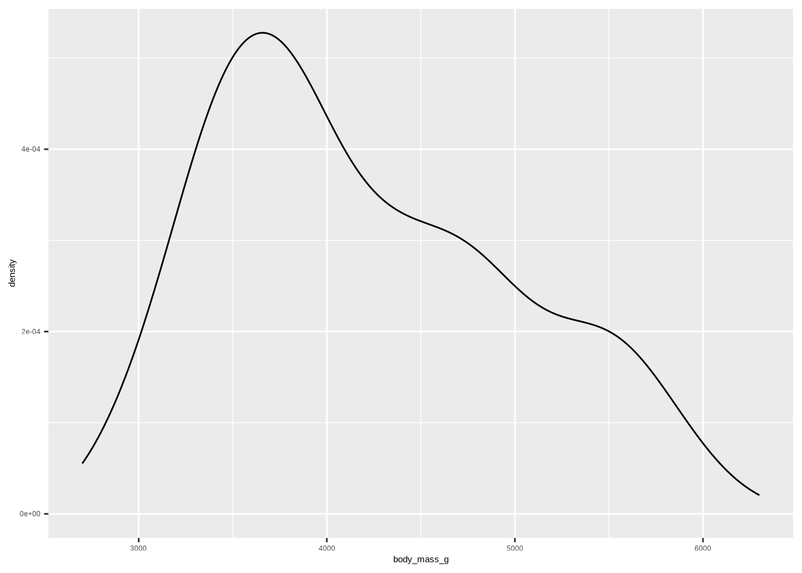
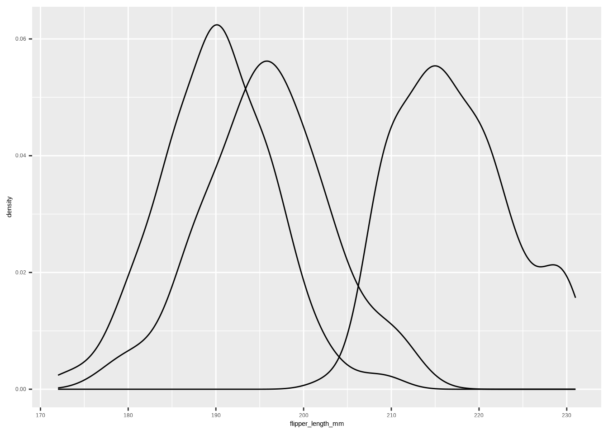

ggplot(penguins, aes(body_mass_g)) +
geom_density()

Copy the following code and put it in a code cell in Google Colab. Only do this if you are using a completely new notebook.
DATA → your data frame/tibble (e.g., penguins)Y → the outcome variable (e.g., body_mass_g)X, X1, X2, …, Xp → predictor variables (e.g flipper_length_mm, species)factor(X) if needed).This is the process of trying to reduce unexplained variation in an outcome by using informative predictors — think getting it less wrong with an educated guess.
If we know some information, we can get less wrong over time.
We believe the outcome (\(Y\)) is generated by an unknown data generated process (\(DGP_1\)): \(Y \sim DGP_1\). A minimal model says all outcomes are generated from a number (labeled as \(\beta_0\)) plus or minus some error (\(\varepsilon\)):
\[ Y = \beta_0 + \varepsilon \]
This is known as a simple model and the errors are simulated by a different DGP \(\varepsilon \sim DGP_2\). The simple model is unknown, so we construct and estimated simple model for our best guess on how the data is generated:
\[ \hat Y = \hat\beta_0 \]
The carats above the letters are known as hats, which means best guess.
Observed vs. estimated:
Template:
DATA → your data (e.g., penguins).Y → the outcome variable (e.g., body_mass_g).Example:
Model form:
\[ Y = \beta_0 + \beta_1 X + \varepsilon, \quad \hat Y = \hat\beta_0 + \hat\beta_1 X. \]
# Add a least-squares line
ggplot(penguins, aes(flipper_length_mm, body_mass_g)) +
geom_point() +
stat_smooth(method = "lm", se = FALSE)
#>
#> Call:
#> lm(formula = body_mass_g ~ flipper_length_mm, data = penguins)
#>
#> Coefficients:
#> (Intercept) flipper_length_mm
#> -5872.09 50.15Template:
When we use a categorical predictor in a regression, R needs to convert the categories into numbers. This is done using dummy variables (also called indicator variables).
1 if the observation belongs to that category0 otherwiseExample: Penguin species:
The species variable has 3 categories: Adelie, Chinstrap, Gentoo.
We create two dummy variables:
| Species | \(D_1\) (Chinstrap) | \(D_2\) (Gentoo) |
|---|---|---|
| Adelie | 0 | 0 |
| Chinstrap | 1 | 0 |
| Gentoo | 0 | 1 |
If we model penguin body mass (\(Y\)) with species:
\[ \hat Y_i = \beta_0 + \beta_1 D_{1i} + \beta_2 D_{2i} \]
Predictions:
- Adelie: \(\hat Y = \beta_0\)
- Chinstrap: \(\hat Y = \beta_0 + \beta_1\)
- Gentoo: \(\hat Y = \beta_0 + \beta_2\)
R automatically creates dummy variables when you use a factor in lm().
The first level of the factor is used as the reference group (by default).
# Fit model with species (factor) as predictor
m <- lm(body_mass_g ~ species, data = penguins)
summary(m)#>
#> Call:
#> lm(formula = body_mass_g ~ species, data = penguins)
#>
#> Residuals:
#> Min 1Q Median 3Q Max
#> -1142.44 -342.44 -33.09 307.56 1207.56
#>
#> Coefficients:
#> Estimate Std. Error t value Pr(>|t|)
#> (Intercept) 3706.16 38.14 97.184 <2e-16 ***
#> speciesChinstrap 26.92 67.65 0.398 0.691
#> speciesGentoo 1386.27 56.91 24.359 <2e-16 ***
#> ---
#> Signif. codes: 0 '***' 0.001 '**' 0.01 '*' 0.05 '.' 0.1 ' ' 1
#>
#> Residual standard error: 460.8 on 330 degrees of freedom
#> Multiple R-squared: 0.6745, Adjusted R-squared: 0.6725
#> F-statistic: 341.9 on 2 and 330 DF, p-value: < 2.2e-16Templates:
The function num_by_cat_stats() quickly computes descriptive statistics of a numerical variable grouped by a categorical variable.
Template:
DATA: the data frame (e.g., penguins)NUM: the numerical variable you want to summarize (e.g., body_mass_g)CAT: the categorical variable that defines groups (e.g., species)Example:
#> Categories min q25 mean median q75 max sd var iqr
#> 1 Adelie 2850 3362.5 3706.164 3700 4000 4775 458.620 210332.4 637.5
#> 2 Chinstrap 2700 3487.5 3733.088 3700 3950 4800 384.335 147713.5 462.5
#> 3 Gentoo 3950 4700.0 5092.437 5050 5500 6300 501.476 251478.3 800.0
#> missing
#> 1 0
#> 2 0
#> 3 0Correlation (two numerical variables): \(-1 \le r \le 1\). For simple linear regression, \(R^2 = r^2\).
Template:
Model: \(\hat Y = \hat\beta_0 + \hat\beta_1 X\). Supply new X to get a prediction \(\hat Y\).
Template:
Examples:
Model: \(Y = \beta_0 + \beta_1 X_1 + \cdots + \beta_p X_p + \varepsilon\)
Template:
Example: danceability ~ mode_name + valence + energy
# Example: danceability ~ mode_name + valence + energy
lm(danceability ~ mode_name + valence + energy, data = taylor_album_songs)#>
#> Call:
#> lm(formula = danceability ~ mode_name + valence + energy, data = taylor_album_songs)
#>
#> Coefficients:
#> (Intercept) mode_nameminor valence energy
#> 0.53816 0.08386 0.17554 -0.05944\[R^2 = 1 - \frac{\text{Var(resid)}}{\text{Var}(Y)}, \quad R^2_{adj} = 1 - \Big(\frac{\text{Var(resid)}}{\text{Var}(Y)}\Big) \cdot \frac{n-1}{n-k-1}\]
DATA → your data frame (e.g., penguins)Y → the outcome variable (e.g., body_mass_g)DATA → your data frame (e.g., penguins)Y → the outcome variable (e.g., body_mass_g)X → predictor variables (e.g flipper_length_mm)DATA → your data frame (e.g., penguins)Y → the outcome variable (e.g., body_mass_g)X → predictor variables (e.g species)DATA → your data frame (e.g., penguins)Y → the outcome variable (e.g., body_mass_g)X → predictor variables (e.g species)DATA: the data frame (e.g., penguins)NUM: the numerical variable you want to summarize (e.g., body_mass_g)CAT: the categorical variable that defines groups (e.g., species)DATA → your data frame (e.g., penguins)Y → the outcome variable (e.g., body_mass_g)X → predictor variables (e.g flipper_length_mm)DATA → your data frame (e.g., penguins)Y → the outcome variable (e.g., body_mass_g)X → predictor variables (e.g flipper_length_mm)DATA → your data frame (e.g., penguins)Y → the outcome variable (e.g., body_mass_g)X1, X2, …, Xp → predictor variables (e.g flipper_length_mm, species)DATA → your data frame (e.g., penguins)Y → the outcome variable (e.g., body_mass_g)X1, X2, …, Xp → predictor variables (e.g flipper_length_mm, species)DATA → your data frame (e.g., penguins)Y → the outcome variable (e.g., body_mass_g)X → predictor variables (e.g flipper_length_mm)m <- lm(Y ~ X1 + X2 + ... + Xp, data = DATA)
predict(m, newdata = data.frame(X1 = VAL1, X2 = VAL2, ..., Xp = VALp))DATA → your data frame (e.g., penguins)Y → the outcome variable (e.g., body_mass_g)X1, X2, …, Xp → predictor variables (e.g flipper_length_mm, species)VAL1, VAL2, …, VALp → predictor values (e.g 150, "Gentoo")---
title: "Linear Regression Models"
description: "Explaining variation, simple & multiple linear models, categorical predictors, correlation, prediction"
format:
html:
toc: true
toc-depth: 3
number-sections: true
code-tools: true
code-fold: false
theme: cosmo
smooth-scroll: true
editor: source
execute:
echo: true
warning: false
message: false
error: true
cache: true
jupyter: r
knitr:
opts_chunk:
comment: "#>"
---
# Setup
```{r}
#| label: setup
#| include: false
# install.packages(c("tidyverse","DT"))
# install.packages("csucistats")
# install.packages("ThemePark")
# install.packages("palmerpenguins")
# install.packages("taylor")
library(tidyverse)
library(csucistats)
library(ThemePark)
library(taylor)
library(palmerpenguins)
library(DT)
penguins <- palmerpenguins::penguins |> tidyr::drop_na()
theme_set(theme_bw())
```
## Google Colab
Copy the following code and put it in a code cell in Google Colab. Only do this if you are using a completely new notebook.
``` r
# This code will load the R packages we will use
install.packages(c("csucistats", "taylor", "palmerpenguins"),
repos = c("https://inqs909.r-universe.dev",
"https://cloud.r-project.org"))
library(csucistats)
library(tidyverse)
library(taylor)
library(palmerpenguins)
```
## Using the templates: what to change
- **`DATA`** → your data frame/tibble (e.g., `penguins`)
- **`Y`** → the outcome variable (e.g., `body_mass_g`)
- **`X`, `X1`, `X2`, ..., `Xp`** → predictor variables (e.g `flipper_length_mm`, `species`)
- For categorical predictors: ensure the predictor is a **factor** (use `factor(X)` if needed).
# Modeling Relationships
## Explaining variation
This is the process of trying to **reduce unexplained variation** in an outcome by using informative predictors — think *getting it less wrong* with an educated guess.
```{r}
#| label: fig-plot-1
ggplot(penguins, aes(body_mass_g)) +
geom_density()
```
If we know some information, we can get less wrong over time.
```{r}
# Same variable, grouped by a category (species)
ggplot(penguins, aes(body_mass_g, fill = species)) +
geom_density(alpha = .5)
```
## A simple model (intercept-only)
We believe the outcome ($Y$) is generated by an unknown data generated process ($DGP_1$): $Y \sim DGP_1$. A minimal model says all outcomes are generated from a number (labeled as $\beta_0$) plus or minus some error ($\varepsilon$):\
$$ Y = \beta_0 + \varepsilon $$
This is known as a simple model and the errors are simulated by a different DGP $\varepsilon \sim DGP_2$. The simple model is unknown, so we construct and estimated simple model for our best guess on how the data is generated:
$$
\hat Y = \hat\beta_0
$$
The carats above the letters are known as hats, which means best guess.
::: callout-tip
**Observed vs. estimated:**
- Observed $Y = \beta_0 + \varepsilon$
- Estimated $\hat Y = \hat\beta_0$
:::
### Fitting Simple Model
**Template:**
``` r
lm(Y ~ 1, data = DATA)
```
- **`DATA`** → your data (e.g., `penguins`).\
- **`Y`** → the outcome variable (e.g., `body_mass_g`).
**Example:**
```{r}
# Fit the null (intercept-only) model
m0 <- lm(body_mass_g ~ 1, data = penguins)
m0
```
## Linear regression model with one predictor
**Model form:**
$$
Y = \beta_0 + \beta_1 X + \varepsilon, \quad \hat Y = \hat\beta_0 + \hat\beta_1 X.
$$
```{r}
# Scatter plot
ggplot(penguins, aes(flipper_length_mm, body_mass_g)) +
geom_point()
```
```{r}
# Add a least-squares line
ggplot(penguins, aes(flipper_length_mm, body_mass_g)) +
geom_point() +
stat_smooth(method = "lm", se = FALSE)
```
```{r}
# Fit the model
m1 <- lm(body_mass_g ~ flipper_length_mm, data = penguins)
m1
```
**Template:**
``` r
lm(Y ~ X, data = DATA)
```
# Categorical predictors (dummy variables)
When we use a **categorical predictor** in a regression, R needs to convert the categories into numbers. This is done using **dummy variables** (also called indicator variables).
## General idea
- Suppose we have a categorical variable with **C categories**.\
- We create **C − 1 dummy variables**, each taking value:
- `1` if the observation belongs to that category\
- `0` otherwise\
- The category without a dummy variable becomes the **reference (baseline)** group.
**Example: Penguin species:**
The `species` variable has 3 categories: **Adelie, Chinstrap, Gentoo**.
We create two dummy variables:
- $D_1$: 1 if Chinstrap, 0 otherwise\
- $D_2$: 1 if Gentoo, 0 otherwise\
- Adelie is the reference (when both $D_1 = 0, D_2 = 0$)
| Species | $D_1$ (Chinstrap) | $D_2$ (Gentoo) |
|-----------|-------------------|----------------|
| Adelie | 0 | 0 |
| Chinstrap | 1 | 0 |
| Gentoo | 0 | 1 |
## Regression model with dummy variables
If we model penguin body mass ($Y$) with species:
$$
\hat Y_i = \beta_0 + \beta_1 D_{1i} + \beta_2 D_{2i}
$$
- $\beta_0$: mean of Adelie (reference group)\
- $\beta_1$: difference in mean body mass between Chinstrap and Adelie\
- $\beta_2$: difference in mean body mass between Gentoo and Adelie
Predictions:\
- Adelie: $\hat Y = \beta_0$\
- Chinstrap: $\hat Y = \beta_0 + \beta_1$\
- Gentoo: $\hat Y = \beta_0 + \beta_2$
## R Implementation
R automatically creates dummy variables when you use a factor in `lm()`.\
The first level of the factor is used as the **reference group** (by default).
```{r}
# Fit model with species (factor) as predictor
m <- lm(body_mass_g ~ species, data = penguins)
summary(m)
```
**Templates:**
``` r
lm(Y ~ X, data = DATA) # if X is already a factor
lm(Y ~ factor(X), data = DATA) # force X to be treated as factor
```
## Group Statistics
The function `num_by_cat_stats()` quickly computes **descriptive statistics of a numerical variable grouped by a categorical variable**.
**Template:**
``` r
num_by_cat_stats(DATA, NUM, CAT)
```
- `DATA`: the data frame (e.g., `penguins`)
- `NUM`: the numerical variable you want to summarize (e.g., `body_mass_g`)
- `CAT`: the categorical variable that defines groups (e.g., `species`)
**Example:**
```{r}
num_by_cat_stats(penguins, body_mass_g, species)
```
# Strength & correlation
Correlation (two numerical variables): $-1 \le r \le 1$. For simple linear regression, $R^2 = r^2$.
```{r}
cor(penguins$body_mass_g, penguins$flipper_length_mm)
```
```{r}
# R^2 helper
r2(lm(body_mass_g ~ flipper_length_mm, data = penguins))
```
**Template:**
``` r
# Correlation
cor(DATA$Y, DATA$X)
## R-Squared
xlm <- lm(Y ~ X, data = DATA);
r2(xlm)
```
# Prediction
Model: $\hat Y = \hat\beta_0 + \hat\beta_1 X$. Supply new X to get a prediction $\hat Y$.
**Template:**
``` r
m <- lm(Y ~ X, data = DATA)
predict(m, newdata = data.frame(X = VAL))
```
**Examples:**
```{r}
xlm1 <- lm(body_mass_g ~ species, data = penguins)
predict(xlm1, newdata = data.frame(species = "Gentoo"))
```
```{r}
xlm2 <- lm(body_mass_g ~ flipper_length_mm, data = penguins)
predict(xlm2, newdata = data.frame(flipper_length_mm = 190))
```
# Multiple linear regression (MLR)
Model: $Y = \beta_0 + \beta_1 X_1 + \cdots + \beta_p X_p + \varepsilon$
**Template:**
``` r
lm(Y ~ X1 + X2 + ... + Xp, data = DATA)
```
**Example: danceability \~ mode_name + valence + energy**
```{r}
# Example: danceability ~ mode_name + valence + energy
lm(danceability ~ mode_name + valence + energy, data = taylor_album_songs)
```
## Adjusted $R^2$
$$R^2 = 1 - \frac{\text{Var(resid)}}{\text{Var}(Y)}, \quad
R^2_{adj} = 1 - \Big(\frac{\text{Var(resid)}}{\text{Var}(Y)}\Big) \cdot \frac{n-1}{n-k-1}$$
```{r}
m <- lm(danceability ~ mode_name + valence + energy, data = taylor_album_songs)
ar2(m)
```
# Appendix: quick templates (copy‑paste)
## Simple Model
``` r
lm(Y ~ 1, data = DATA)
```
- **`DATA`** → your data frame (e.g., `penguins`)
- **`Y`** → the outcome variable (e.g., `body_mass_g`)
## Simple linear regression
``` r
lm(Y ~ X, data = DATA)
```
- **`DATA`** → your data frame (e.g., `penguins`)
- **`Y`** → the outcome variable (e.g., `body_mass_g`)
- **`X`** → predictor variables (e.g `flipper_length_mm`)
## SLR: Categorical predictor
``` r
lm(Y ~ X, data = DATA)
```
- **`DATA`** → your data frame (e.g., `penguins`)
- **`Y`** → the outcome variable (e.g., `body_mass_g`)
- **`X`** → predictor variables (e.g `species`)
## SLR: Categorical predictor (Create Factor)
``` r
lm(Y ~ factor(X), data = DATA) # coerce X to factor
```
- **`DATA`** → your data frame (e.g., `penguins`)
- **`Y`** → the outcome variable (e.g., `body_mass_g`)
- **`X`** → predictor variables (e.g `species`)
## Numerical Statistics by Categories
``` r
num_by_cat_stats(DATA, NUM, CAT)
```
- `DATA`: the data frame (e.g., `penguins`)
- `NUM`: the numerical variable you want to summarize (e.g., `body_mass_g`)
- `CAT`: the categorical variable that defines groups (e.g., `species`)
## Correlation
``` r
cor(DATA$Y, DATA$X, use = "complete.obs")
```
- **`DATA`** → your data frame (e.g., `penguins`)
- **`Y`** → the outcome variable (e.g., `body_mass_g`)
- **`X`** → predictor variables (e.g `flipper_length_mm`)
## $R^2$
``` r
m <- lm(Y ~ X, data = DATA)
r2(m)
```
- **`DATA`** → your data frame (e.g., `penguins`)
- **`Y`** → the outcome variable (e.g., `body_mass_g`)
- **`X`** → predictor variables (e.g `flipper_length_mm`)
## Multiple linear regression
``` r
lm(Y ~ X1 + X2 + ... + Xp, data = DATA)
```
- **`DATA`** → your data frame (e.g., `penguins`)
- **`Y`** → the outcome variable (e.g., `body_mass_g`)
- **`X1`, `X2`, ..., `Xp`** → predictor variables (e.g `flipper_length_mm`, `species`)
## Adjusted $R^2$
``` r
# Adjusted R^2
m <- lm(Y ~ X1 + X2 + ... + Xp, data = DATA)
ar2(m)
```
- **`DATA`** → your data frame (e.g., `penguins`)
- **`Y`** → the outcome variable (e.g., `body_mass_g`)
- **`X1`, `X2`, ..., `Xp`** → predictor variables (e.g `flipper_length_mm`, `species`)
## Prediction: SLR
``` r
m <- lm(Y ~ X, data = DATA)
predict(m, newdata = data.frame(X = VAL))
```
- **`DATA`** → your data frame (e.g., `penguins`)
- **`Y`** → the outcome variable (e.g., `body_mass_g`)
- **`X`** → predictor variables (e.g `flipper_length_mm`)
## Prediction: MLR
``` r
m <- lm(Y ~ X1 + X2 + ... + Xp, data = DATA)
predict(m, newdata = data.frame(X1 = VAL1, X2 = VAL2, ..., Xp = VALp))
```
- **`DATA`** → your data frame (e.g., `penguins`)
- **`Y`** → the outcome variable (e.g., `body_mass_g`)
- **`X1`, `X2`, ..., `Xp`** → predictor variables (e.g `flipper_length_mm`, `species`)
- **`VAL1`, `VAL2`, ..., `VALp`** → predictor values (e.g `150`, `"Gentoo"`)